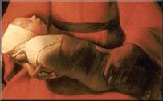
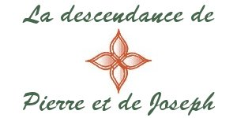

|
|
|
   Source: Fonds numérisé Drouin |
|
Joseph Choret Né
le 25 septembre 1719 à Montréal |
Marie Anne
Lemay Née
le 24 janvier 1725 à Longue Pointe |
|
Mariage le 8 janvier 1742 à Sault-au-Récollet |
|
| Marie Élisabeth Choret Née le 2 janvier 1743 à Sault-au-Récollet Mariage le 7 janvier 1765 à Sault-au-Récollet (sous le prénom Marie-Anne) avec François- Amable Lécuyer. 2ème mariage le 1 septembre 1806 à Sault-au-Récollet avec Amable Monet, veuf de Josephte Prud'homme. |
|
| Joseph Charles Choret Né le 23 mai 1745 à Sault-au-Récollet Décédé le 3 mars 1767 à Sault-au-Récollet. |
|
| Marie Amable Choret Née le 17 mai 1747 à Sault-au-Récollet Mariage le 13 février 1764 à Sault-au-Récollet avec Jacques Martineau, fils de Mathurin et Marie-Joseph David. 2ème mariage le 22 février 1802 à Sault-au-Récollet avec Albert Lebeau, veuf de M-Thérèse Martineau. Décédée le 4 mai 1813 à Sault-au-Récollet. |
|
| Jean
Baptiste Choret Né le 23 mars 1749 à Sault-au-Récollet Mariage le 13 octobre 1774 à Rivière des Prairies avec Marie-Josephte Lorain, fille de Paul et Marie-Joseph Rangé. Décédé le 13 juin 1798 à Saint-Laurent, Montréal. |
voir le site
web qui lui est consacré en |
| Pierre Choret Né le 29 septembre 1750 à Sault-au-Récollet Mariage le 31 janvier 1774 à Sault-au-Récollet avec Marie Marguerite Laplante Champagne, fille de Michel et de Marie Martineau. |
|
| Marie Françoise Choret Née le 28 octobre 1752 à Sault-au-Récollet |
|
| Marie Angélique Choret Née le 2 octobre 1755 à Sault-au-Récollet Mariage le 23 février 1778 à Sault-au-Récollet avec Pierre Robrau Duplessis, fils de Pierre et de Louise Beler. Décédée le 24 août 1793 à Saint-Laurent, Montréal. |
|
| François Choret Né le 10 novembre 1758 à Sault-au-Récollet (Se rend à l'âge adulte puisqu'il est témoin à l'un des mariages de son frère Louis) |
|
|
Marie Josephte
Choret |
|
| Joseph Choret (il
vit sous le prénom de Louis) Né le 15 juin 1765 à Sault-au-Récollet Mariage le 10 janvier 1791 (à l'âge de 25 ans selon l'acte religieux) à Montréal avec Marie-Louise Dufresne, fille de Philippe et de Marie-Joseph Ladouceur. 2ème mariage le 8 février 1802 à Saint-Eustache avec Marie-Charlotte Cadieux, fille de Joseph et Marie-Angélique Lafantaisie. Son témoin est son frère Jacques. 3ème mariage le 19 février 1816 à Ste-rose de Laval avec Marie-Louise Jolicoeur, veuve de François Bigras. Son témoin est son frère François. Décédé le 25 mai 1839 à Saint-Augustin-des-deux-Montagnes. |
|
| Pierre Choret (il
vit sous le prénom de Jacques) Né le 15 juin 1765 à Sault-au-Récollet Mariage le 25 janvier 1802 (à l'âge de 37 ans selon l'acte religieux) à Saint-Eustache avec Marie Biore, fille de Pierre et de Geneviève Demers. Ses témoins sont Louis et Antoine, frères de l'époux. (Qui est Antoine? ou erreur du curé durant l'écriture de l'acte de mariage ?) |
|
|
Pierre Choret Né
le 13 septembre 1716 à Charlesbourg |
Marie (Catherine) Lemay Née
le 27 mars 1723 à St-Laurent |
|
Mariage le 8 janvier 1742 à Sault-au-Récollet |
|
| Marie Madeleine Choret Née le 1 novembre 1742 à Sault-au-Récollet. Décédée le 7 septembre 1756 à Sault-au-Récollet |
|
| Pierre Choret Né le 1 août 1745 à Sault-au-Récollet. À l'âge adulte, Pierre s'installe à St-Louis, Missouri. |
|
| Jacques Choret Né le 30 mai 1747 à Sault-au-Récollet |
|
| Marie Marguerite
Choret Née le ? Mariage le 19 avril 1773 à Sault-au-Récollet |
|
| Joseph Marie Choret Né le 9 août 1750 à Sault-au-Récollet. Décédé le 24 décembre 1753 à Sault-au-Récollet |
|
| Jean Baptiste Choret (vit
sous le prénom de Louis réf: PRDH)
Né le 10 mai 1752 à Sault-au-Récollet Mariage le 3 février 1783 à Rivière-des-Prairies avec Marie-Louise Lorrain, fille de Paul et de Marie-Joseph Rangé. Décédé le 5 juillet 1810 à Montréal (réf: PRDH) |
|
| Robert Choret Né le 16 avril 1754 à Sault-au-Récollet |
|